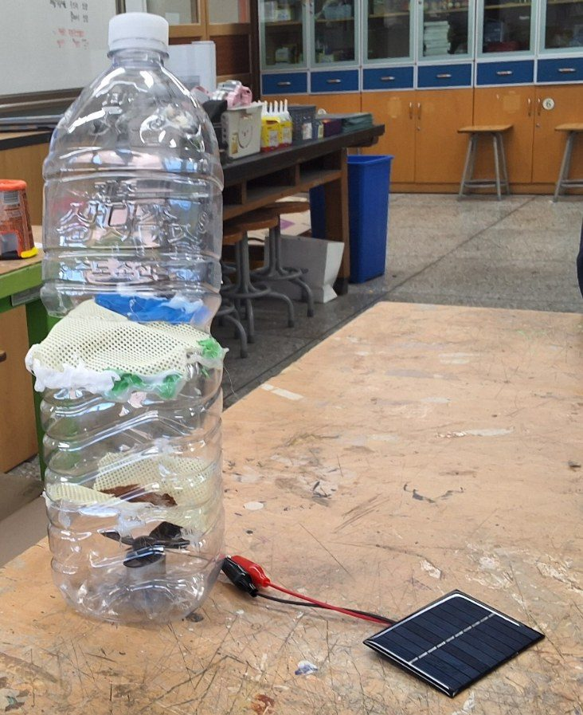
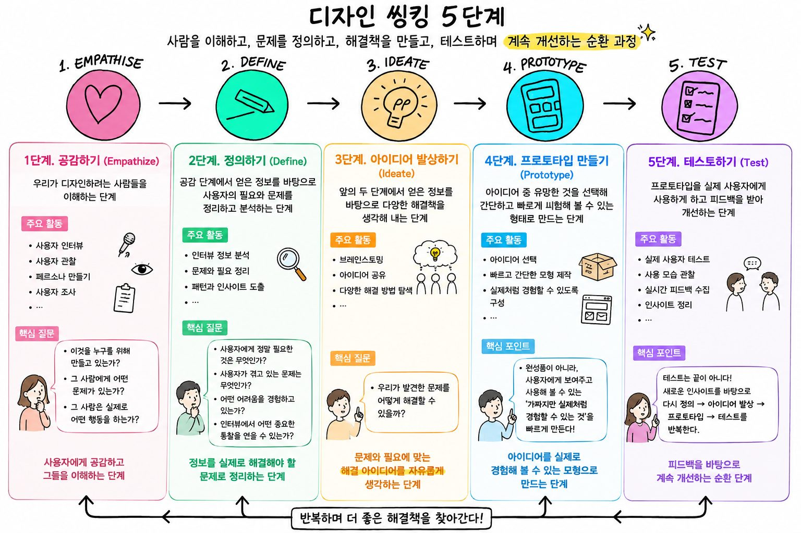
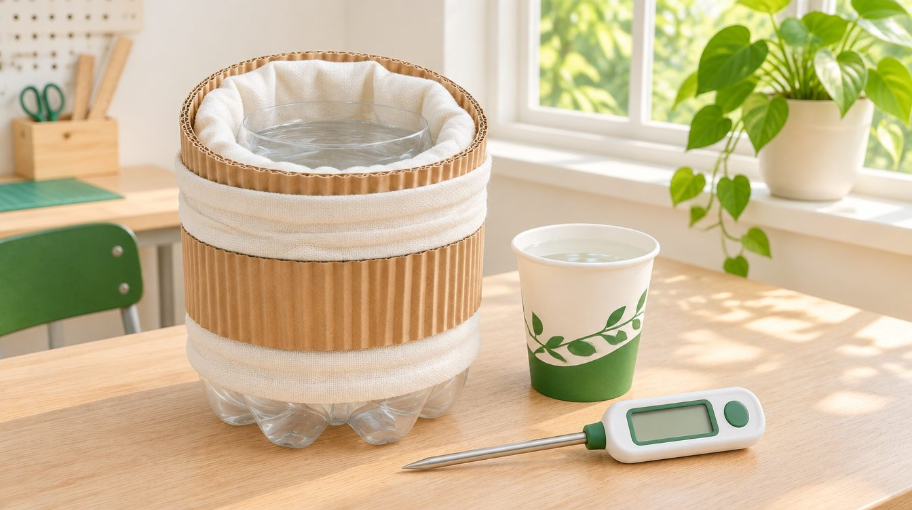
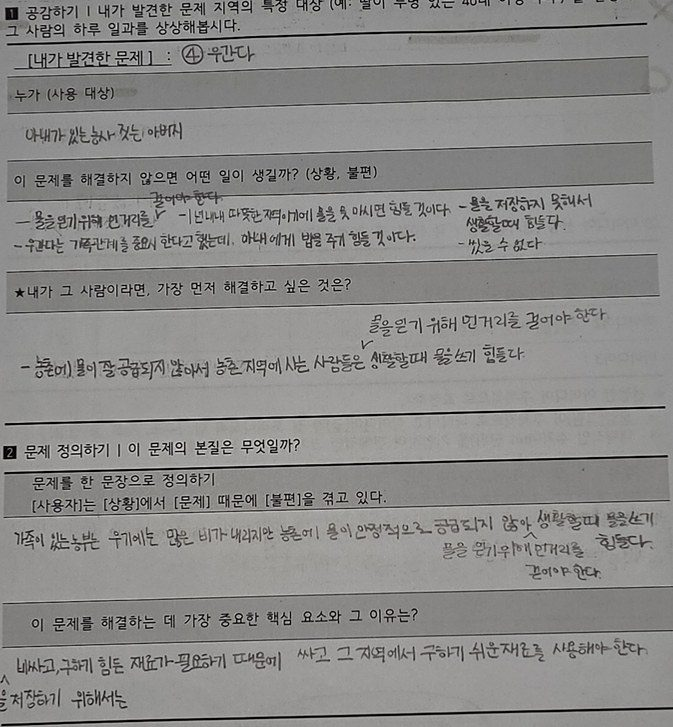

수업 현장
기술실에서 이렇게 했어요


학생 얼굴은 흐리게 처리했습니다.
적정기술 프로토타이핑과 태양광 업사이클링 제작 · 5차시
물이 햇빛을 퍼뜨려요. 전기도 기계도 없이, 버려지는 페트병으로.
낮에 모은 햇빛 전기를 축전지에 화학에너지로 담아 두었다가, 밤에 LED로 다시 빛을 내요.

현지 사람이 직접 만들고 고칠 수 있는 시제품을 설계하고, 만들고, 실험해요.
×라오스에 태양광 건조기가 필요하다.
○라오스 농민은 비가 잦아 농산물을 말리지 못해 오래 보관하기 어렵다.
수업 현장
학생 얼굴은 흐리게 처리했습니다.
이 수업의 질문
누구의 어떤 불편을
해결할까?
적정기술은 그 지역에 맞고, 부담 없이 사용할 수 있으며, 스스로 지속할 수 있어야 해요.
에너지소양 주제 · 무탄소 에너지에너지소양 주제 · 사회경제
무탄소 에너지: 태양전지로 빛에너지를 전기에너지로 바꿔 씀 · 사회경제: 전기가 부족한 지역의 에너지 빈곤을 적정기술로 줄임
적용: 기술·가정 5차시 수업 · 2026. 8. 18.(사전)·10. 20.(사후) 에너지 소양 검사 18명
현지의 기후·생활·문화에 맞아요.
사고 쓰는 비용이 알맞아요.
현지 재료로 현지 사람이 직접 만들고 고칠 수 있어요.

전자칠판에 띄우고 그 자리에서 한 차시를 진행해요. 학생은 태블릿에서 같은 화면을 열어 활동지를 써요.

[12기가04-04] 공학적 문제해결 사례를 통해 창의성, 팀워크, 의사소통 역량과 같은 공학적 소양의 중요성과 필요성을 인식한다.
[12기가05-04] 친환경 에너지의 종류와 원리, 활용 사례를 탐구하며, 에너지 전환과 관련된 공학적 문제를 해결하는 과정에서 창의적 자신감과 태도를 갖는다.
에듀테크: 디벗(1차시 개인별, 2~5차시 모둠당 1대) · 띵커벨(제작 사진·비교 실험 영상 공유와 동료 평가) · 재료: 태양전지, LED·모터·능동형(발진 회로 내장) 피에조 부저 — 작동 전압 확인
수업 진행
한 화면에 질문 하나. 교사 모드를 켜면 지도안의 발문·유의점이 보여요. 교실 전자칠판에서는 차시별 수업 화면을 열면 활동지·슬라이드까지 한 페이지로 진행할 수 있어요.
적정기술, 누구를 위한 기술일까?
아이들이 놀이기구를 돌리면 물이 퍼 올려지도록 만든 놀이기구 물 펌프가 있었어요. 실제로는 물을 얻으려면 쉬지 않고 돌려야 했고, 고장 나도 고칠 부품과 사람이 없어 멈춘 곳이 많았어요.
그 사람이 가장 먼저 해결하고 싶은 불편은 무엇일까?
오늘의 활동: 문제해결 사례 → 공감하기 → 문제 정의와 아이디어
그림: 연구회가 수업 설명용으로 직접 그림(실제 제품의 구조를 단순화).
이 문제를 해결하려면 무엇이 필요했을까?
의뢰 7가지 — 하나를 골라요
①~⑤ 타국: 에너지와 생활 문제가 겹친 곳 · ⑥⑦ 서울: 내가 직접 겪는 탄소중립 문제
카드로 뽑아 보기 ↓농민에게 정말 필요한 건 건조기일까요, 비 오는 날에도 농산물을 말릴 방법일까요?
문장 분류 연습 ↓그 사람의 하루를 상상해요
의뢰 하나를 골라 특정 대상(예: 딸이 두 명 있는 40대 주부, 고아학교에서 밥을 짓는 조리사)을 정하고, 아침·점심·저녁의 불편을 써요.
| 예시 · 상상해서 쓴 사용자 — 라오스 농민 ‘분’(45세), 가족 5명, 고추와 바나나 재배 | |
|---|---|
| 아침 | 수확한 고추를 마당에 넌다 |
| 점심 | 갑자기 비 → 급히 걷어 들인다 |
| 저녁 | 덜 마른 고추에 곰팡이 → 팔 수 없다 |
| ★ | 가장 먼저 해결하고 싶은 것: 비 오는 날에도 고추를 말릴 방법 |
디벗 약속: AI에게 “답 알려줘” 하지 않기 · 참고했다면 사실인지 확인하고 출처 남기기 · 확인한 사실과 상상한 추측을 구분하기
제품 이름이나 해결책은 넣지 않고, 가장 큰 불편 하나에 집중해요.
활동지 01에 바로 써 보기 ↓“어떻게 하면 ~할 수 있을까?”
같은 불편을 줄일 서로 다른 방법 두 가지 이상을 구상해요.
예시 2는 위험을 알리는 보조 장치예요. 열사병 위험은 햇빛보다 기온과 습도에 크게 좌우돼요.
평가 행렬로 고르기 ↓고른 아이디어와 그 이유 — 어떤 사용자의 어떤 불편을 줄이나요?
이 아이디어는 사용자를 위한 아이디어인가요, 내가 만들고 싶은 제품인가요?
다음 시간 준비: 구상도에 그릴 크기(치수), 필요한 재료 떠올려 오기
내 아이디어, 그 마을에서 만들 수 있을까?
1차시에 정의한 문제 문장을 다시 읽어 봅시다.
적정기술은 현지 사람이 직접 만들고 고칠 수 있어야 해요.
그 지역 사람이 직접 만들고 고칠 수 있게 설계했을까?
태양전지가 빛에너지 → 전기에너지로 직접 바꿔요.
활용: 지붕 태양광, 태양광 가로등
바람이 날개를 돌리고 발전기가 운동에너지 → 전기에너지로 바꿔요.
활용: 해상 풍력 단지
높은 곳 물의 위치에너지 → 떨어지며 운동에너지 → 발전기에서 전기에너지로 바꿔요.
활용: 댐, 소수력 발전
우리가 쓸 에너지는? → 태양광. 햇빛이 충분한 곳이면 연료 없이 전기를 만들 수 있어요. 빛이 약하면(흐린 날·실내) 전기도 적게 나와요.
빛 → 전기 → 빛·운동·소리
빛을 받으면 태양전지의 +극과 −극 사이에 전압이 생기고, 회로를 이으면 전기가 흘러요. 전자부품이 전기를 다시 빛·운동·소리로 바꾸는데, 이때 일부는 열로 빠져나가요.

긴 다리가 +, 짧은 다리가 −. 반대로 꽂으면 안 켜져요.
반대로 연결하면 회전 방향만 바뀌어요.
발진 회로가 들어 있어 직류만 넣어도 삐— 울려요. +, − 표시를 확인해요. 수동형은 직류로는 ‘딸깍’ 소리만 나요.
| 부품 | 작동 조건(대략, 제품마다 다름) | 우리 태양전지와 비교 |
|---|---|---|
| LED | 빨강 약 1.8~2 V · 흰색·파랑 약 3 V, 수 mA~20 mA | 태양전지 뒷면의 정격(V·mA)을 적고, 모자라면 직렬(전압)·병렬(전류)로 연결 |
| 소형 모터 | 약 1.5~3 V, 수십~수백 mA | |
| 능동형 피에조 부저 | 정격 전압 확인(3 V 이하 작동형 권장), 수~수십 mA |
4개 중 3개는 작동하지 않아요. 모둠은 미니 화이트보드에 ‘작동 안 하는 회로 번호와 이유’를 쓰고, 하나 둘 셋에 동시 공개! 카드를 누르면 정답이 보여요.
힌트: 전기는 +에서 나와 부품을 거쳐 −로 돌아와야 해요. 이유까지 맞히면 2점!

구상도는 각자 그려요. 다른 사람이 보고 똑같이 만들 수 있을 만큼 자세히!
| 시제품 재료 | 현지 대체 재료 | 출처·이유(예시) |
|---|---|---|
| 우드락 판 | 대나무 살 · 나무판 | 마을 주변에서 흔히 자람 |
| 플라스틱 통 | 버려진 페트병 · 깡통 | 재활용품으로 구하기 쉬움 |
| 글루건 고정 | 끈 묶기 · 나무못 | 고장 날 때 풀고 다시 묶기 쉬움 |
무엇을 비교하면 불편이 줄었다고 말할 수 있을까?
건조대 밖 · 같은 양의 얇게 썬 사과 · 3시간
태양열 건조대 안(태양전지 팬으로 환기) · 같은 양의 얇게 썬 사과 · 3시간
같게 할 조건: 빛 · 시간 · 재료의 양 · 측정 방법 / 바꾸는 것: 제품 1가지
비교 예시: 정수기 사용 전후의 물 / 배기구가 있을 때와 없을 때의 화덕 / 건조대 안과 밖
태양열 건조대: 투명 덮개 안에서 태양열로 데워진 공기가 재료를 말리고, 태양전지 팬은 습한 공기를 내보내는 역할을 해요. 통고추는 마르는 데 며칠이 걸리니, 수업 시간 안에 차이를 보려면 얇게 썬 과일이나 젖은 천을 써요.
모둠 계획서를 함께 읽고 재료 분담을 확인해요.
준비물과 담당자를 계획서에 적어요. 다음 시간에는 기술실에서 제작해요.
공구 사용 약속부터
평평한 재료는 커팅 매트 위에서 쇠자를 대고, 날은 몸 바깥 방향으로. 둥근 페트병·깡통은 칼로 작은 틈만 낸 뒤 가위로 잘라요. 자른 단면과 깡통 가장자리는 절연 테이프로 감싸요.
받침대에 세워 두기. 노즐과 녹은 접착제는 맨손으로 만지지 않기. 다 쓰면 전원 분리.
보안경을 쓰고 환기되는 곳에서 소량만. 면장갑 등 흡수성 재료와 닿지 않게. 피부가 붙으면 억지로 떼지 말고 따뜻한 비눗물에 불린 뒤 선생님께 알려요.
금 간 태양전지는 쓰지 않아요(깨진 모서리에 베일 수 있어요). 햇빛 시험 때 해를 직접 보지 않아요. 연결은 납땜 없이 집게 전선·커넥터로 해요.
전지와 회로 약속
충전지가 아닌 건전지·코인전지는 절대 충전하지 않아요. 새거나 터질 수 있어요. 밤에 쓰는 설계는 충전지(예: 니켈수소 AA)와 충전 모듈로 만들어요.
리튬 전지는 수업에서 쓰지 않아요. 합선되거나 과충전되면 뜨거워지고 불이 날 수 있어요(쓰려면 보호 회로가 든 충전 모듈과 선생님 확인).
전지의 +와 −를 전선으로 바로 잇지 않아요. 뜨거워지면 바로 떼고 선생님께 알려요.
전지·충전지에 LED를 달 때는 저항을 직렬로 함께 연결해요. 저항 없이 연결하면 전류가 너무 커서 LED가 망가져요.
선정한 문제를 해결하는 시제품을 완성할 수 있을까?
3차시 · 제작 1: 기본 구조 + 태양전지 연결해 첫 작동 / 4차시 · 제작 2: 완성 · 고정 · 작동 영상 촬영
제작 1 — 기본 구조와 첫 작동
구상도에 따라 재료를 마름질하고 가공해 기본 구조를 만들어요. 태양전지와 전자부품을 연결해 기본 작동을 확인하고, 만드는 과정을 디벗으로 찍어요.
제작 2 — 완성하고 검사해요
구조를 완성하고 외관과 고정 상태를 다듬어요. 전자부품은 떼어 바꿀 수 있게 붙이고, 햇빛 아래에서 모든 부품이 작동하는지 검사해요. 완성하면 작동 영상을 찍어요.
작동!
고친 내용은 제작 일기에: 증상 → 확인한 원인 → 시도한 해결 → 다음에 할 일
| 예시 · 문제와 해결 쓰기 | |
|---|---|
| 증상 | 햇빛 아래에서 LED가 안 켜짐 |
| 원인 | LED 다리를 반대로 꽂음 |
| 해결 | 뒤집어 다시 연결 → 켜짐! |
| 다음 할 일 | 집게 전선으로 바꿔 떼어 바꾸기 쉽게 |
종료 확인: □ 글루건 전원 분리 □ 정리 완료 □ 사진·기록 저장 □ 자리 정리
활동지 05 제작 일기 ↓A 모두 충족(5점) · B 1~2가지 미충족(4~3점) · C 모두 미충족(2점) 또는 미완성(0점)
우리 시제품은 처음 정의한 불편을 줄였을까?
1차시에 정의한 문제 문장을 다시 읽고, 그 불편이 줄었는지 알려면 무엇을 비교해야 할지 이야기해요.
비교 예시: 정수기 사용 전후의 물, 배기구가 있을 때와 없을 때의 화덕


| 가상 예시 · 얇게 썬 사과 3시간 뒤 무게 (가상 수치) | A 건조대 밖 (g) | B 건조대 안 (g) |
|---|---|---|
| 1회 | 100 → 82 | 100 → 64 |
| 2회 | 100 → 80 | 100 → 61 |
해석 건조대 안에서 수분이 더 많이 빠졌다 → 부분 성공
결과는 단위와 함께, 있는 그대로 정직하게!
판정: □ 성공 □ 부분 성공 □ 실패 □ 판단 보류

좋은 댓글 예: “비 오는 날에는 어떻게 하나요?” — 사용자 입장의 질문
띵커벨 열기선택 활동 — 하면 바로 앞 ‘띵커벨 동료 평가’(15분)를 대신해요. 개선점 쓰기 13분은 그대로.
투자 예시: A모둠 50 · B모둠 30 · C모둠 20 — “비 오는 날에도 쓸 수 있어서!”
개선안은 2가지 이상, 각자 써요. 모둠원과 같으면 인정되지 않아요!
활동지 07 ↓사용자 문제를 해결하려고 내가 새롭게 시도한 것은?
역할을 나누고 어려움을 함께 해결한 실제 행동은?
어떤 의견을 듣고 내 생각이나 설계를 바꾸었나요?
모둠별로 한 가지씩 나누기 → 개인 활동지와 모둠 실험 보고서 제출 → 시제품은 전자부품 먼저 분리 → 재료별로 나누기 → 분리배출
실험실 ① · 2차시
부품을 바꾸고, 축전지를 연결하고, 밤으로 바꿔 보세요. 전기가 흐르는 길이 움직이는 선으로 보이고, 빠져나가는 열도 보여요. 밤으로 바꾸면 회로판도 어두워져요.
햇빛 100 → 전기 약 15~20 → LED 빛 약 5~8, 나머지는 열
교육용 단순화: 상용 실리콘 태양전지 효율은 약 20% 안팎이고, 수업용 소형 태양전지는 더 낮아요. 축전지에 넣고 꺼낼 때도 일부가 열로 빠져요. 사라진 에너지는 없어요 — 모두 더하면 처음 햇빛의 양과 같아요.
그림 속 해·축전지·부품을 눌러도 바뀌어요.
실험실 ② · 1차시
제품 이름이나 “~가 필요하다”가 들어가면 해결책이에요. 사용자·상황·불편이 보이면 불편 문장이에요.
점수 0 / 0

각 의뢰에는 탐구 질문 4개가 붙어 있어요(활동지 원본 참고). 카드 뒷면의 질문은 활동지 01의 칸이에요.
실험실 ③ · 1차시 활동지 02
현실성·경제성·적정성(현지생산)을 각 10점으로 매기면 합계와 순위가 바로 정렬돼요. 마음에 드는 것부터 고르고 점수를 맞추면 안 돼요!
학생 활동
쓴 내용은 이 브라우저에만 저장돼요. 제출은 종이 활동지(수업 PPT·보고서 별첨 원본)로 해요.
↑ 수업 진행으로 돌아가기고른 의뢰: — (위 카드에서 고르세요)

태양전지는 전기를 저장하지 않아요. 밤에 쓰는 설계에는 충전지와 충전 모듈(역류 방지 다이오드 포함)이 필요해요. 건전지·코인전지는 충전하지 않고, 리튬 전지는 쓰지 않으며, 전지에 LED를 달 때는 저항을 함께 연결해요.
보고서 점검: □ 작동 영상 □ 비교로 문제 개선 확인 □ 작품 설명 □ 제품+전자부품 스케치
평가
구상도와 개선점은 각자 써요. 모둠원과 똑같으면 점수를 받을 수 없어요!
A·B·C는 이 과제의 채점 수준이며, 학기 성취도는 학교 성취평가 기준에 따라 따로 산출합니다.
| 영역(차시) | A | B | C |
|---|---|---|---|
| 창의성 개인 10점 · 2차시 | 아이디어를 두 가지 이상 구상해 선정하고, 치수·구조·재료와 회로(태양전지-전자부품 연결)가 드러나게 구상도로 표현한다. (10점) | 한 가지를 구상해 구체적으로 표현했거나(8점), 두 가지 이상을 구상·선정했으나 구체적 표현이 부족하다(6점). | 한 가지를 구상했으나 구체적으로 표현하지 못했거나(4점), 구상하지 못했다(2점). |
| 문제 해결 조건 모둠 5점 · 3~4차시 | 사용자를 고려한 설계, 전원과 전자부품 1개 이상 활용, 쉬운 유지보수(탈착 가능)를 모두 충족한다. (5점) | 세 조건 중 1~2가지를 충족하지 못했다. (4~3점) | 세 조건을 모두 충족하지 못했거나(2점), 결과물을 완성하지 못했다(0점). |
| 실험 보고서 모둠 5점 · 5차시 | 작동 영상, 문제 개선 확인, 작품 설명, 제품과 전자부품 스케치를 모두 갖춘다. (5점) | 네 조건 중 1~2가지를 지키지 못했다. (4~3점) | 세 가지 이상을 지키지 못했거나(2점), 실험 보고를 하지 않았다(1점). |
| 문제해결력 개인 10점 · 5차시 | 피드백·실험 결과를 근거로 문제를 찾고, 바꿀 부분과 기대하는 변화를 갖춘 개선점을 두 가지 이상 쓴다. (10점) | 근거·바꿀 부분·기대 변화를 갖춘 개선점을 한 가지 썼다. (8점) | 문제를 찾았으나 개선점을 쓰지 못했거나(6점), 문제를 찾지 못했다(2점). |
| 관찰 항목 | A | B | C |
|---|---|---|---|
| 공감하기 | 대상의 나이, 가족, 하루 일과를 정하고 해결하지 않으면 생길 불편을 구체적인 상황으로 쓴다. | 대상은 정했으나 하루 일과나 불편을 ‘힘들다’처럼 막연하게 쓴다. | 대상을 정하지 못했거나, 불편을 하나도 쓰지 못한다. |
| 문제 정의 | 가장 큰 불편 하나를 골라 사용자, 상황, 불편이 드러나는 한 문장으로 정의한다. | 한 문장으로 정의했으나 상황이나 불편 중 일부가 빠져 있다. | ‘~가 필요하다’처럼 해결책을 문제로 쓰거나 여러 불편을 나열한다. |
| 공학적 소양 | 사례에서 창의성, 팀워크, 의사소통이 문제 해결에 어떻게 쓰였는지 구체적인 장면을 들어 설명한다. | 공학적 소양의 요소 이름은 말하지만 사례의 어느 장면인지 들지 못한다. | 창의성·팀워크·의사소통 가운데 어느 것도 말하지 못한다. |
| 아이디어 구상 | 정의한 문제를 해결할 아이디어를 두 가지 이상 구상하고 무엇을, 어떻게 해결하는지 쓴다. | 아이디어를 한 가지 구상했거나, 두 가지 중 하나가 문제와 이어지지 않는다. | 아이디어를 쓰지 못했거나, 정의한 문제와 관계없는 제품 이름만 쓴다. |
| 아이디어 선정 | 현실성, 경제성, 적정성(현지생산)을 점수로 매기고 선정한 이유를 쓴다. | 평가 행렬은 채웠으나 선정한 이유가 분명하지 않다. | 평가 기준을 적용하지 않고 마음에 드는 아이디어를 고른다. |
수업 결과

학생 얼굴은 흐리게 처리했습니다. 띵커벨 화면의 학번·반·작성 시각은 가렸습니다.
프로그램 운영 전(2026. 8. 18.)과 후(2026. 10. 20.)에 검사했어요. 두 번 모두 응답한 18명의 점수를 대응표본 t검정으로 비교했어요.
사전 24명, 사후 20명 응답 · 표준편차: 지식 3.07→3.34, 태도 0.56→0.50, 행동 0.93→0.73 · 지식 점수는 18명 중 11명 오름, 4명 같음, 3명 내림
| 점수가 오른 영역 | 학생 수 | 사전 평균 | 사후 평균 | 변화가 큰 문항 |
|---|---|---|---|---|
| 지식 (15점) | 11명 | 8.27 | 11.27 | 손전등의 에너지 전환, 에너지 보존, 에너지원별 발전량 |
| 태도 (5점) | 6명 | 3.68 | 4.11 | 관심과 책임, 에너지 정책 |
| 행동 (5점) | 7명 | 3.30 | 3.87 | 전기 사용량 확인, 가족에게 고효율 제품 권하기 |
지식이 오른 11명 중 손전등 문항 정답자는 1명→8명(9.1%→72.7%). 다만 점수가 오른 학생만 골라 본 것이고 사전 점수가 낮았으므로(나머지 7명 평균 11.86점), 상승 폭에는 평균으로 돌아가는 효과가 섞여 있을 수 있어요.